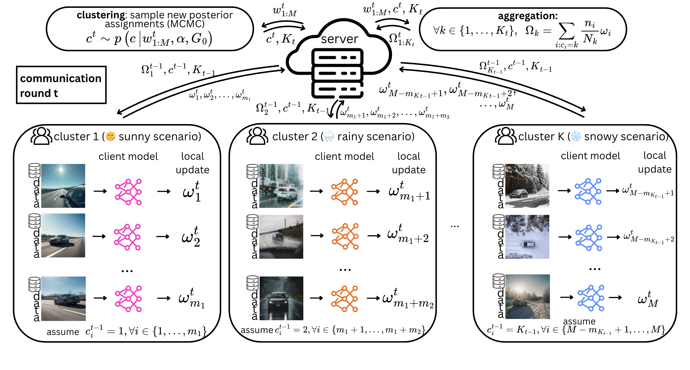

DPMM-CFL: Clustered Federated Learning via Dirichlet Process Mixture Model Nonparametric Clustering
ICASSP, 2026 · Oral
Hello! I'm a Ph.D. student in Computer Engineering at Northeastern University, advised by Prof. Pau Closas.
My research focuses on Bayesian and statistical machine learning for robust, adaptive, and uncertainty-aware decision-making in real-world sensing systems. I combine data-driven learning with physics, probabilistic modeling, and distributed data—from clustered federated learning when clients are heterogeneous, to physics-informed GNSS jammer localization in challenging urban environments.
I earned an M.S. from Northeastern University, with a concentration in Computer Vision, Machine Learning, and Algorithms, along the way to my Ph.D.
I previously completed dual Bachelor’s degrees in Mathematics and Computer Science at CFIS, a selective high-performance program at the Universitat Politècnica de Catalunya, where I built a strong foundation in probability theory, statistical modeling, optimization, and deep learning.
[MAY ’26] All three of our submissions to ICASSP 2026 in Barcelona were accepted! I presented:
[APR ’26] Graduated with my M.S. from Northeastern University, concentrating in Computer Vision, Machine Learning, and Algorithms (CVLA), along the way to my Ph.D.
[JUN ’25] Attended the Y Combinator Startup School event in San Francisco.
[APR ’25] Presented “Jammer Source Localization with Federated Learning” at the IEEE/ION Position, Location and Navigation Symposium (PLANS) in Salt Lake City, Utah.
[MAR ’25] Selected among the Top 10 Computer Science students under 25 in Spain by Nova Talent.
[NOV ’24] Awarded Best Bachelor’s Thesis Prize out of 300+ students at the Faculty of Informatics of Barcelona (FIB), Universitat Politècnica de Catalunya.
[SEP ’24] Started my Ph.D. in Computer Engineering at Northeastern University, advised by Prof. Pau Closas.
Peer-reviewed work on Bayesian machine learning, federated learning, and GNSS security. View full list with figures →

DPMM-CFL: Clustered Federated Learning via Dirichlet Process Mixture Model Nonparametric Clustering
ICASSP, 2026 · Oral

Bayesian Jammer Localization with a Hybrid CNN and Path-Loss Mixture of Experts
ICASSP, 2026 · Poster
Bayesian and statistical machine learning for robust sensing and distributed learning.
What if clients are heterogeneous and naturally divided into latent groups—without knowing how many groups exist in advance?
Can we localize a jammer from crowdsourced GNSS measurements in urban multipath and building shadowing?